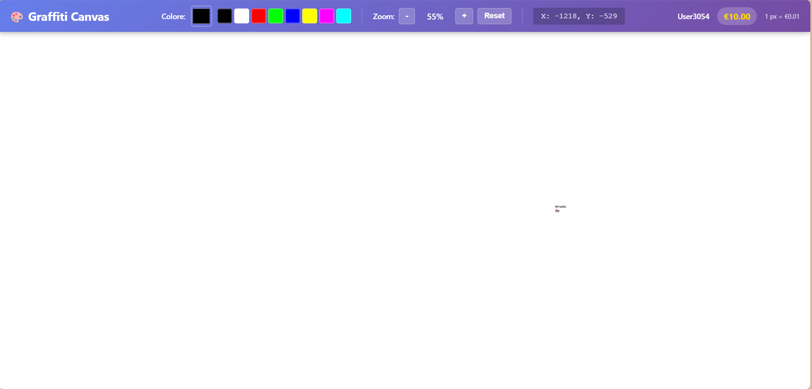
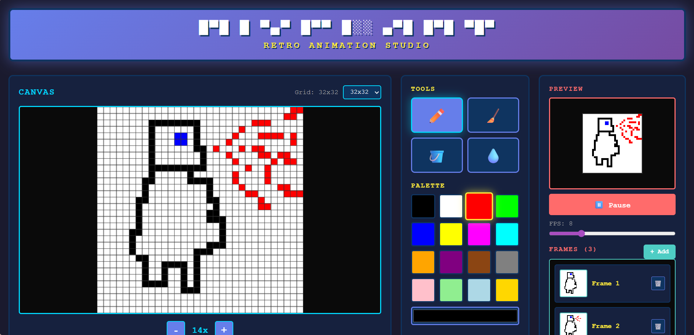
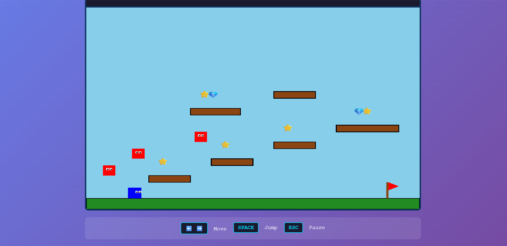
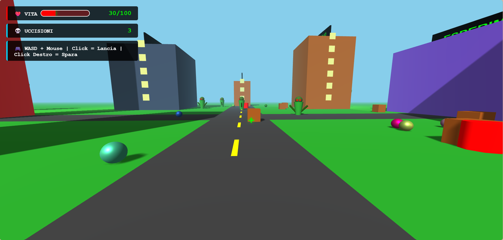

// ACCESSO_LABORATORIO_SPERIMENTALE
MAD
MAD
LAB
Il nostro laboratorio di sperimentazione digitale. Qui ospitiamo i progetti più folli, le idee più pazze e gli esperimenti senza limiti. Benvenuti nel caos creativo.

Arte Interattiva
2025
DIGITAL_GRAFFITI_WALL
Tela Virtuale per Street Art

Strumenti Retro
2025
PIXEL_ART_ANIMATOR
Studio di Animazione Retro

Sviluppo Giochi
2024
PLATFORM_GAME
Videogioco Platform Retro

WebGL/3D
2024
3D_PORTFOLIO_WORLD
Ambiente 3D Interattivo